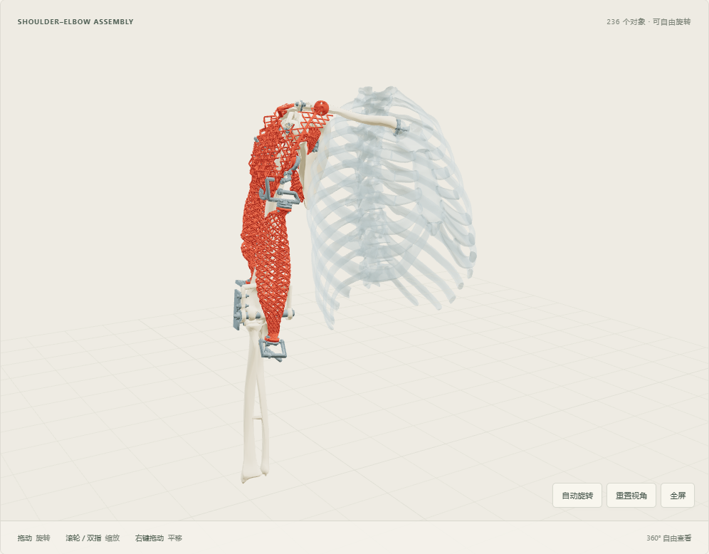
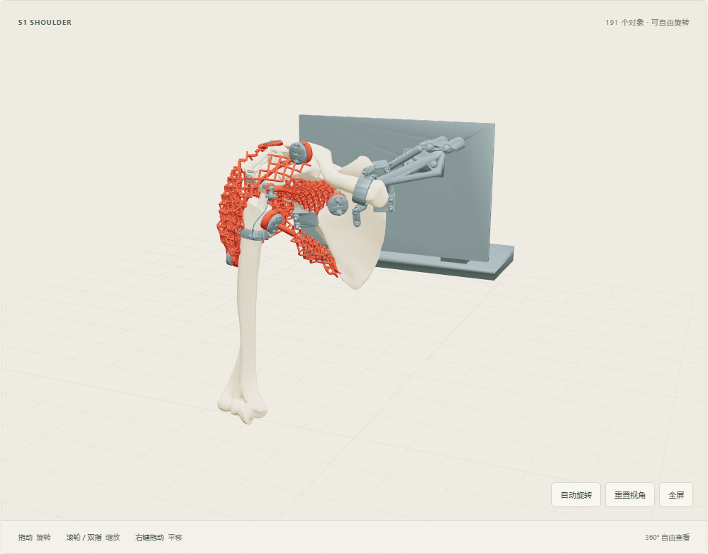
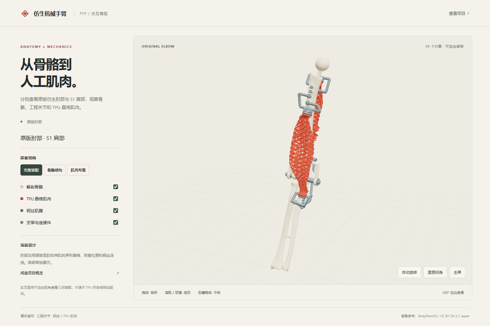

FINAL-YEAR PROJECT
Biomimetic
shoulder & elbow.
An anatomical right-arm mechanism with engineered joints and cable-driven TPU lattice muscles.
Shoulder–elbow motion
MuJoCo replayThe two views show the same four-second loading and release cycle. The forearm is highlighted in green.
- Predicted peak elbow flexion
- 100.1°Original comparison floor 116°
- Rigid collision samples
- 801No overlap above the screening threshold
- Peak elbow-flexor input
- 25 NEquivalent tensile force in the model
The replay uses a fixed shoulder girdle and equivalent tensile inputs. TPU deformation, friction and physical drive range remain to be measured.
Explore the design
360° model viewers
Integrated shoulder & elbow
Rotate the assembly to inspect the shared humerus, shoulder joint, forearm and elbow slider. The 3D view shows the static design candidate.

S1-Y2 shoulder
Inspect the glenohumeral joint and shoulder muscle attachments.

Anatomical elbow
Inspect the original antagonistic muscles and their local cable paths.
Latest design change
Local relief on the elbow flexor cleared the observed humerus overlap in 123 resampled poses while preserving the cable channel and end attachments. Material stiffness and cable motion under load still need physical checks.